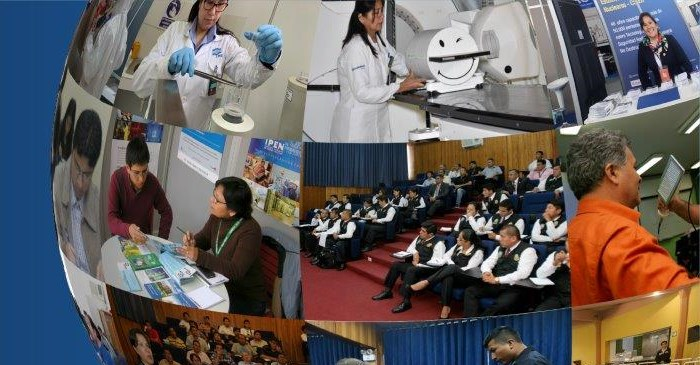

UNMSM / BASE 25
Formación en el Perú y el extranjero para estudiantes de la Escuela Profesional de Ingeniería Nuclear.

El ingreso con Google está pendiente de activación. Ya puedes guardar cursos en este dispositivo como visitante.